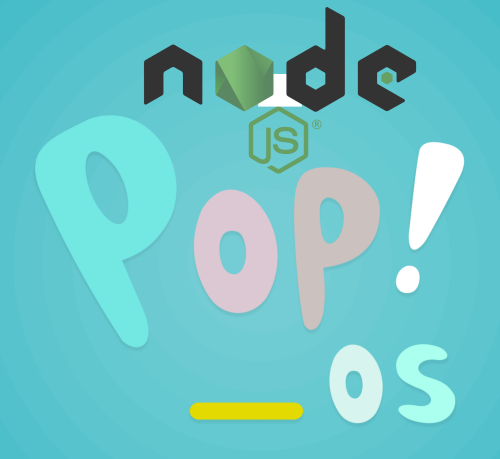

2023 12 05 angular

If you are developing web frontends, you likely use React, Angular, or Vue.js. These JavaScript frameworks are commonly used to create interactive and dynamic web user interfaces. Regardless of the chosen framework, you will need Node.js to run these applications.
This guide will cover setting up your frontend development environment in Pop!_OS. The instructions provided here are also applicable to Ubuntu 22.04.
Introduction¶
Skill level required: Junior to Intermediate Developer
This guide focuses on why you should not install Node.js directly via apt and instead use NVM (Node Version Manager). You will often need different versions of Node.js for different projects. For example, an older project might require an older version of Node.js, while a newer project might require a newer version.
By the end of this guide you should have NVM installed and be able to continue your front end development journey on Pop!_OS.
Don't use apt to install Node.js and npm¶
Typically, you'll install most software on Pop!_OS and Ubuntu using apt as it's a very simple way to install 1000s of software in the Linux world.
So you'd be tempted to just install Node.js and npm via apt. Do not do this. Avoid installing Node.js and npm via apt for the following reasons:
- Outdated Node.js Version: The apt sources on Ubuntu and Pop!_OS provide Node.js v12.22.9, which is an outdated version released in January 2022. This outdated version of Node.js does not work with the latest version of Angular.
- Permission Issues with npm: Installing npm via apt causes it to store files in /usr/local/lib/node_modules, a system path that requires root privileges for writing. This necessitates using sudo with every npm install command, including those within Angular projects. Additionally, building Angular projects with sudo grants ownership of the built files to the root account, restricting access for non-root users.
- Variable Angular Requirements: Different Angular projects may have varying dependencies on specific Angular and Node.js versions. Simply installing the latest Node.js version may not be good enough for all projects.
Installing Node.js with NVM¶
NVM stands for Node Version Manager, and it works with most flavors of Linux and macOS. NVM allows you to install multiple versions of Node at the same time and to very easily switch between them. This is extremely helpful if you have multiple projects each of which are using different versions of Angular. By using NVM you can simply switch to the right version of Node.js to build the project that you are trying to build.
On a side note there is an excellent port of NVM called nvm-windows if you want to use NVM but are stuck with Windows.
Additionally, NVM runs from your /home/your-user-name/.nvm folder and runs under your user account, so you don't have to use sudo commands which means that you won't run into permission issues.
To install NVM we simply run the following command
wget -qO- https://raw.githubusercontent.com/nvm-sh/nvm/v0.39.5/install.sh | bashthe NVM installer adds additional lines to your .bashrc file (more information on this in the Appendix) so that the NVM script is accessible from your path. You can either just close your terminal window and start a new one for this change to take effect OR you can just use the source command below.
source ~/.bashrcConfirm that NVM is installed
nvm --version
# returns: 0.39.5 (or newer if you have installed a newer version)Installing the latest lts version of Node.js
nvm install --ltsUsing the latest version of Node.js
nvm use --ltsI use Node.js with Angular and installing Angular works as expected with the following command.
npm install --global @angular/cliExample use case: Upgrading an Angular 7 app¶
In the next few weeks, I'm going to be inheriting an application that is using Angular 7. Now Angular 7 is no longer supported (it's support ended in 2019), and I'll need to upgrade this application all way to at least Angular 15.
Now I can check which version of node works with which version of Angular using https://angular.io/guide/versions
I can see that I'll need Node.js 10.9.0 to build this Angular 7 app, which I'll install and use with the following.
nvm install 10.9.0
nvm use 10.9.0Then I'd read the Angular upgrade instructions on https://update.angular.io/ which would lead me to run the following
NG_DISABLE_VERSION_CHECK=1 npx @angular/cli@8 update @angular/cli@8 @angular/core@8Then it's just a matter of testing and then repeating these steps all the way up to Angular 15. By using NVM I can very easily switch to the versions of the Angular CLI and the node that I need to complete this upgrade without having to uninstall and re-install node and npm packages constantly as I slowly upgrade the project.
Appendix¶
What is the .bashrc file¶
The .bashrc file is a shell script that Bash executes whenever it is initiated. This means that the commands and settings in the .bashrc file will be applied every time you open a new terminal window. The .bashrc file is located in the user's home directory, and it is only accessible to that user.
The .bashrc file can be used to configure a variety of settings, including:
- Aliases: Aliases are shortcuts for longer commands. For example, you could create an alias called ll that would run the ls -l command.
- Variables: Variables can be used to store values that can be used in commands. The most common Variable being the PATH variable for allowing you to run executables from another location from the current directory
- Functions: Functions are reusable blocks of code that can be called from other commands. For example, you could create a function that would generate a random number.
Here are some examples of how you can use the .bashrc file:
Create an alias for the ls command (which is much more useful than the default ls command):
alias ll='ls -l'Adding a new folder /opt/camunda-modeler to the PATH this lets me execute the executables in the /opt/camunda-modeler from any folder
export PATH=$PATH:/opt/camunda-modelerCreate a function to generate a random number:
random_number() {
echo $RANDOM
}These are just a few examples of the many things you can do with the .bashrc file. For more information, please refer to the Bash documentation.
Conclusion¶
You should now have a working Node.js environment in Pop!_OS (or Ubuntu 22.04).
The apt tool is useful for installing large amounts of software in the Linux/Debian ecosystem. However, it's not always the best way to install developer tools, as sometimes the packages are quite out of date.
We've learnt that it's better to use NVM (Node Version Manager) to install and switch between different node versions without having to uninstall and reinstall Node.js.